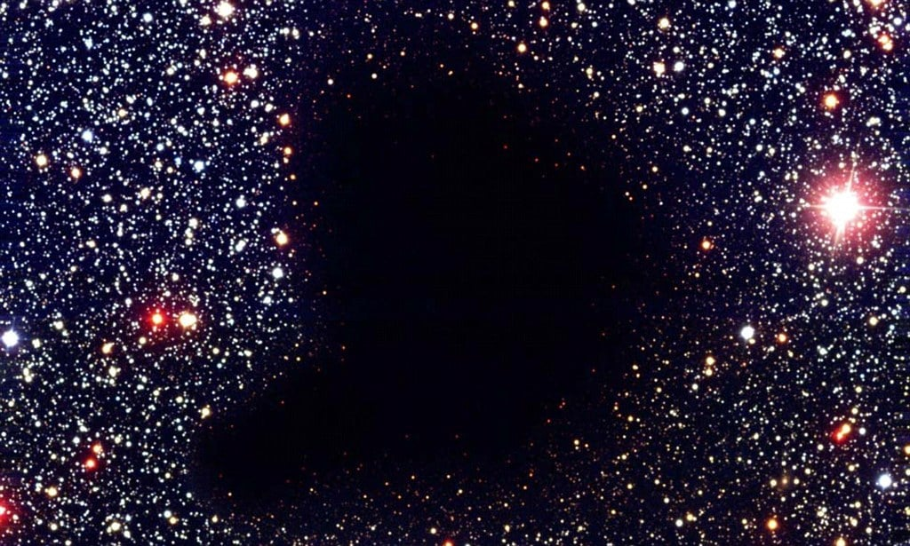

Войды
Пустоты, космические пустоты, также войды (англ. void — «пустота») — обширные области между галактическими нитями, в которых отсутствуют или почти отсутствуют галактики и скопления. Войды обычно имеют размеры порядка 10—100 Мпк. Средняя плотность материи в них менее десятой доли от типичной для наблюдаемой Вселенной.
Космические пустоты (войды) стали объектом изучения астрофизики в середине 1970-х годов, когда астрономические обзоры, измеряющие красное смещение, стали более популярными и позволили двум независимым группам астрофизиков в 1978 году распознать сверхскопления и войды в пространственном распределении галактик. Новые обзоры добавили в двухмерные карты космических структур «глубину», позволив начать создавать первые трёхмерные карты наблюдаемой Вселенной. В этих обзорах расстояние до галактик рассчитывалось из величин их красного смещения, возникающего из-за расширения Вселенной.